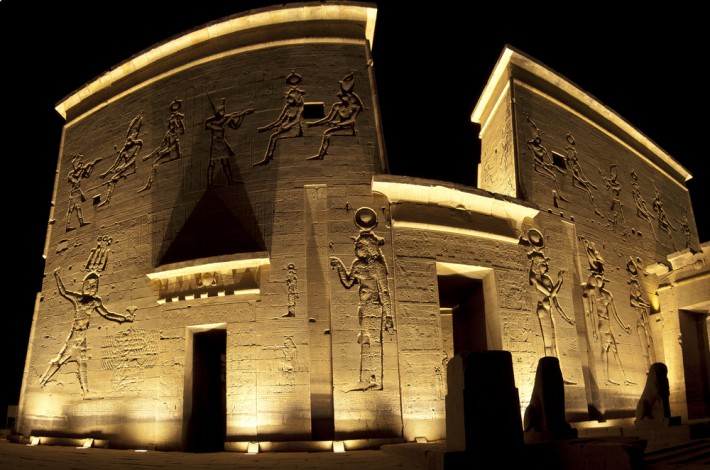
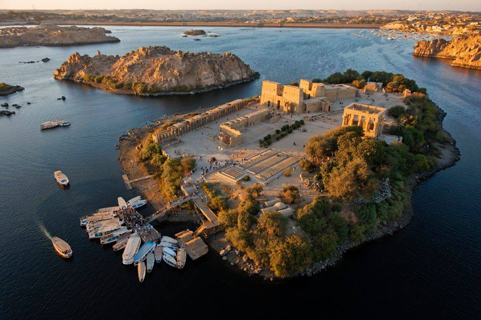
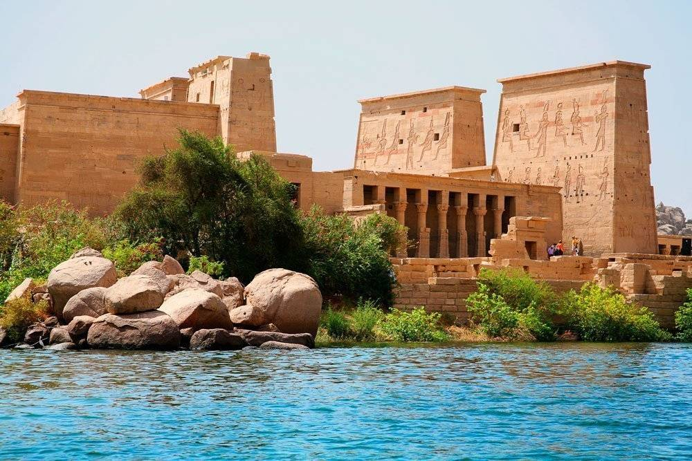
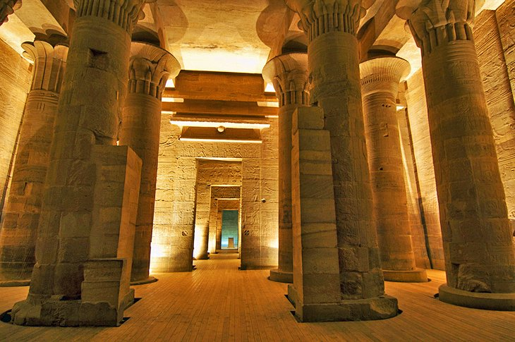
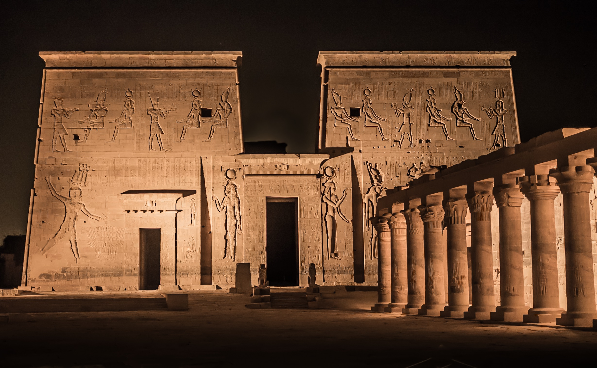

<!DOCTYPE hl>
<hl lang="en">

<head>
    <meta charset="UTF-8">
    <meta name="viewport"
     content="width=device-width, initial-scale=1.0">
    
    <link href="https://fonts.googleapis.com/css?family=Open+Sans:400" rel="stylesheet" />
    <link href="Css/all.min.css" rel="stylesheet" />
    <link href="Css/Philae Temple.css" rel="stylesheet" />
    <title>TourOpia-Philae Temple</title>

</head>

<body>
    <div class="header">
        <div class="container">
            
            <div class="links">
                <span class="icon">
                    <span></span>
                    <span></span>
                    <span></span>
                </span>
                <ul>
                    <li><a onClick="myHome()" href="index.html">Home</a></li>
                    <li><a onClick="myFeatures()" href="features.html">Features</a></li>
                    <li><a onClick="myGallery()" href="gallery.html">Places</a></li>
                    <li><a onClick="myAbout()" href="about.html">About Us</a></li>
                    <li><a onClick="myContact()" href="ContactUs.html">Contact Us</a></li>
                </ul>
            </div>
        </div>
    </div>

    <section class="-mb-1" id="about">
            <div class="-row -about-row">
                <div class="-section-1-l">
                    
                </div>
                <article class="-section-1-r -bg-color-8">
                    <h2 class="-mb-2 -title-color">Philae Temple</h2>
                    <p>The ancient Egyptian name of the smaller island meant "boundary". As their southern frontier, the pharaohs of Egypt kept there a strong garrison, and it was also a barracks for Greek and Roman soldiers in their turn.

The first religious building on Philae was likely a shrine built by Pharaoh Taharqa of the 25th Dynasty, which was probably dedicated to Amun.However this structure is only known from a few blocks reused in later buildings, which Gerhard Haeny suspects may have been brought over for reuse from structures elsewhere.

The oldest temple to have undoubtedly stood on the island, as well as the first evidence of Isis-worship there, was a small kiosk built by Psamtik II of the 26th Dynasty.</p>
                    
                    <a href="https://www.tripsinegypt.com/philae-temple-the-temple-of-isis/" class="-btn -btn-1 -link-to-services" target="_blank">More Detail</a>
                </article>
            </div>
        </section ><h1>Sinking of the Philae temple and the stages of its rescue</h1>
        <div class="-bg-color-1 -mb-1 -row -social-row">
            <div class="-icon">
                <div class="-icon-inner">
                    <a href="#services">
                        <i class="fas fa-synagogue fa-4x -mb-1"></i>
                        <h1>1-Aswan Low Dam</h1>
                        <p>In 1902, the Aswan Low Dam was completed on the Nile River by the British. This threatened to submerge many ancient landmarks, including the temple complex of Philae. The height of the dam was raised twice, from 1907–1912 and from 1929–1934, and the island of Philae was nearly always flooded. In fact, the only times that the complex was not underwater was when the dam's sluices were open from July to October.</p>
                    </a>
                </div>
            </div>
            <div class="-icon">
                <div class="-icon-inner">
                    <a href="#gallery">
                        <i class="fas fa-chart-bar fa-4x -mb-1"></i>
                        <h1>2-Rescue idea</h1>
                        <p>It was proposed that the temples be relocated, piece by piece, to nearby islands, such as Bigeh or Elephantine. However, the temples' foundations and other architectural supporting structures were strengthened instead. Although the buildings were physically secure, the island's attractive vegetation and the colors of the temples' reliefs were washed away. Also, the bricks of the Philae temples soon became encrusted with silt and other debris carried by the Nile.</p>
                    </a>
                </div>
            </div>
            <div class="-icon">
                <div class="-icon-inner">
                    <a href="#contact">
                        <i class="fas fa-images fa-4x -mb-1"></i>
                        <h1>3-Rescue project</h1>
                        <p>The temples had been practically intact since the ancient days, but with each inundation the situation worsened and in the 1960s the island was submerged up to a third of the buildings all year round.
                            In 1960 UNESCO started a project to try to save the buildings on the island from the destructive effect of the ever-increasing waters of the Nile. First, building three dams and creating a separate lake with lower water levels was considered.</p>
                    </a>
                </div>
            </div>
        </div>
        <section class="-mb-1 -row -services-row" id="services">
            <div class="-section-2-l">
                <article class="-bg-color-6 -box-pad -mb-1">
                    <h2 class="-mb-2">Geography of the place & visitor rate</h2>
                    <P>Philae is mentioned by numerous ancient writers, including Strabo, Diodorus Siculus,Ptolemy, Seneca,Pliny the Elder. It was, as the plural name indicates, the appellation of two small islands situated in latitude 24° north, just above the First Cataract near Aswan (Egyptian Swenet "Trade;" Ancient Greek: Συήνη). Groskurd computes the distance between these islands and Aswan at about 100 km (62 mi).</P>
                </article>
                <div class="-bg-color-7 -em-box">
                    <P>you can see more informations </P>
                    <a href="#gallery" class="-btn -btn-2">Read More</a>
                </div>
            </div>
            <div class="-section-2-r">
                
            </div>
        </section>
        <section class="-bg-color-4 -mb-3 -gallery-section" id="gallery">
            <div class="-gallery-header">
                <h2 class="-mb-1 text-right">The Gallery Section</h2>
               <div class="img0">
                  
                  
                  
                <div> <a href="https://www.shutterstock.com/search/temple+philae" class="ga1" target="_blank">Read More</a></div>
               </div>
            </section>
        <footer>
            <div class="footer-content">
                <h1>Touropia</h1>
                <p>Are you interested in sponsored reviews, backlinks, sponsored posts, display advertising on our tourism blog? Contact us on below social sites</p>
                <ul class="social">
					<a href="#"><i id="twitter" class="fab fa-twitter icon fa-2x"></i></a>
					<a href="#"><i id="facebook" class="fab fa-facebook-f icon fa-2x"></i></a>
					<a href="#"><i id="google" class="fab fa-google-plus-g icon fa-2x"></i></a>
					<a href="#"><i id="insta" class="fab fa-instagram icon fa-2x"></i></a>
					<a href="#"><i id="git" class="fab fa-github icon fa-2x"></i></a>
                </ul>
            </div>
            <div class="footer-down">
                <p>CopyRightReserved&copy;2021 TourOpia</p>
            </div>
        </footer>
  
</body>
